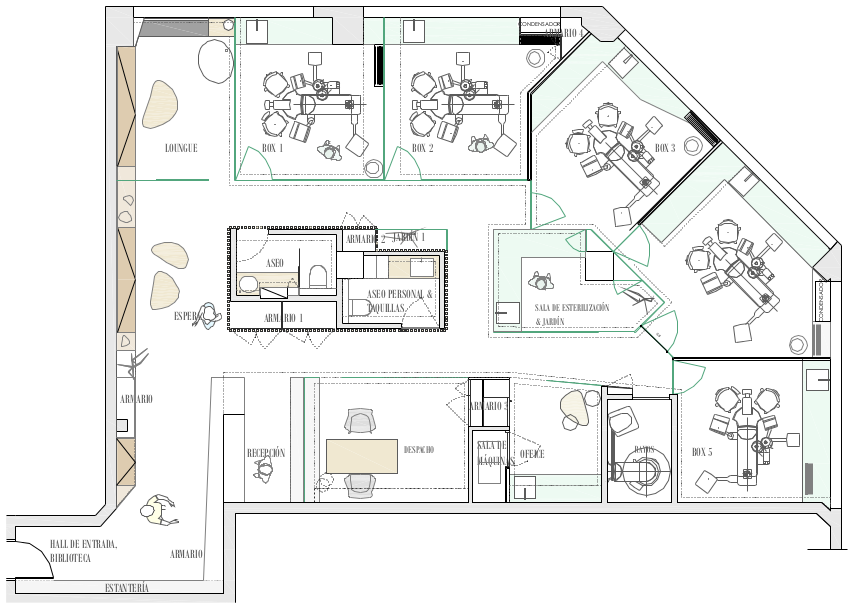

La naturaleza nos inspira...
2 CAJAS, una de ellas cubierta de rastreles de madera de roble rítmicamente ordenados, distribuye el espacio elegantemente, la otra a modo de elemento escultórico, deja ver a través de sus paredes de vidrio lo que ocurre en su interior.
La morfología interior del local ha sido rigurasamente estudiada dejando los gabinetes dando al exterior, donde se aprovecha la iluminación natural y las zonas de uso del personal dando a la medianera.
La idea es generar un espacio con mucha luz, por eso usamos el vidrio, paredes en blanco roto y la madera roble de manera que el aspecto sea fresco y actual.
Esta singular consulta tiene una peculiaridad, se intenta alejar de las sensaciones que todos tenemos al entrar en un dentista:
- miedo
- angustia
- inquietud
Se busca la comodidad y confianza del paciente, donde el propio espacio arquitectónico juega un papel sumamente importante.
Nada más entrar, llama la atención la pared que contiene una biblioteca y una frase: elige tu personalidad. Se invita al paciente a escoger su tema favorito y así tener una espera agradable y amena.
El mueble de recepción un volumen sobrio que se alarga hasta el pasillo de la entrada recogiendo un esbelto tronco de un árbol seco.
Las salas de espera se dividen en dos zonas, una donde se puede disfrutar de proyecciones y otra a la que llamamos "loungue" que es un espacio algo más desenfadado, donde se busca que los niños y adultos se sientan como en casa.
